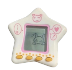
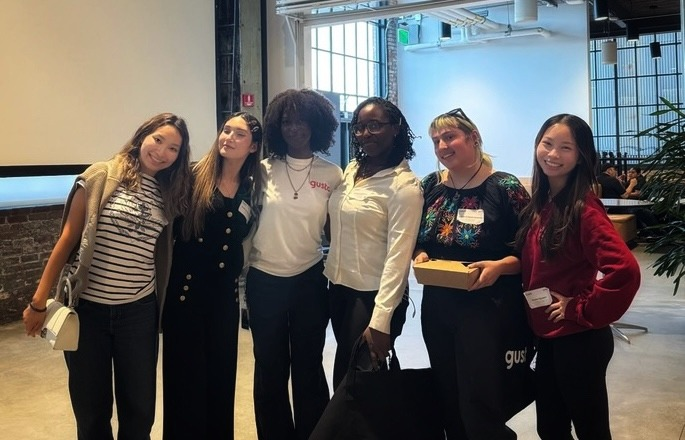
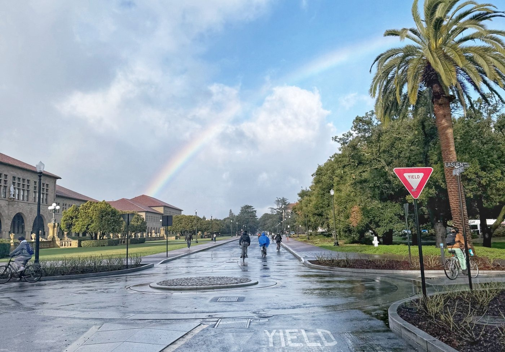
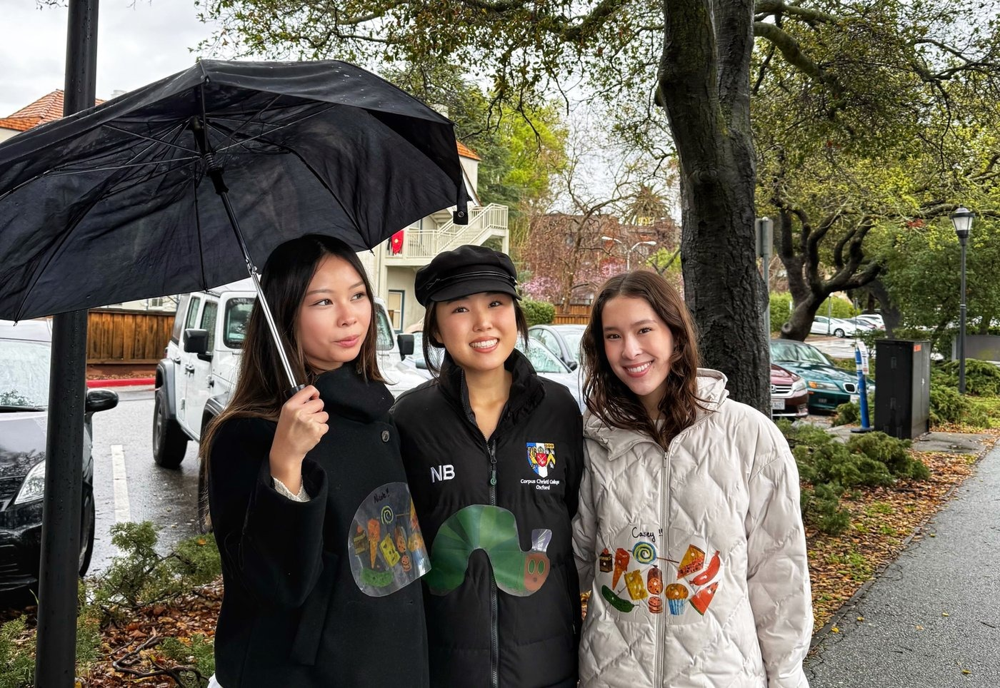

Nicole Uyen-Nghi Nguyen
I’m a community college graduate and Human-Computer Interaction student @ Stanford.
I’ve dabbled in a little bit of everything - engineering, design, data, marketing. I’ve never been particularly drawn to living in just one of these worlds, but I’ve found that I have an eye for all of them, and I love seeing how the pieces fit together.
My background is in sociology, so I’ve spent a lot of time learning how people connect and navigate the world around them. I carry that perspective into product work, so that understanding people comes before building anything.
experience

- Terraso2026Product Manager Intern
- Stanford Tech Impact & Policy Center2026Program Manager Assistant
- Stanford Big Local News2025Product Researcher
- Foundation for California Community Colleges2024Communications & Content Marketing Intern
- Stanford D’Apice Lab2023-2024Research Assistant
leadership
- IBM2026IBM Z Ambassador
- alpha Kappa Delta Phi2026President
- Stanford Vietnamese Student Association2025Co-Public Relations Director
awards
- Stanford Institute for Human-Centered AI & McCoy Center for Ethics2026Tech Impact and Policy Fellow
- Stanford Institute for Research in the Social Sciences2024Intern of the Year


